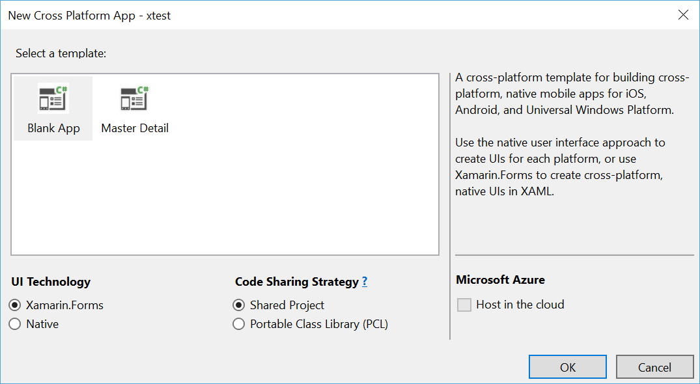
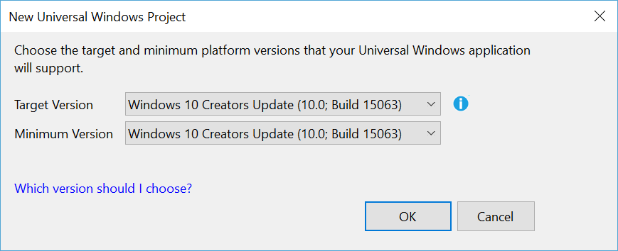
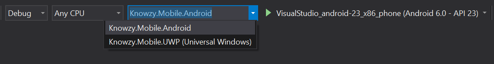
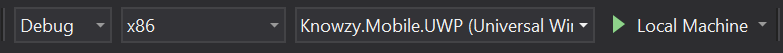
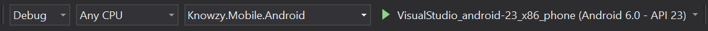
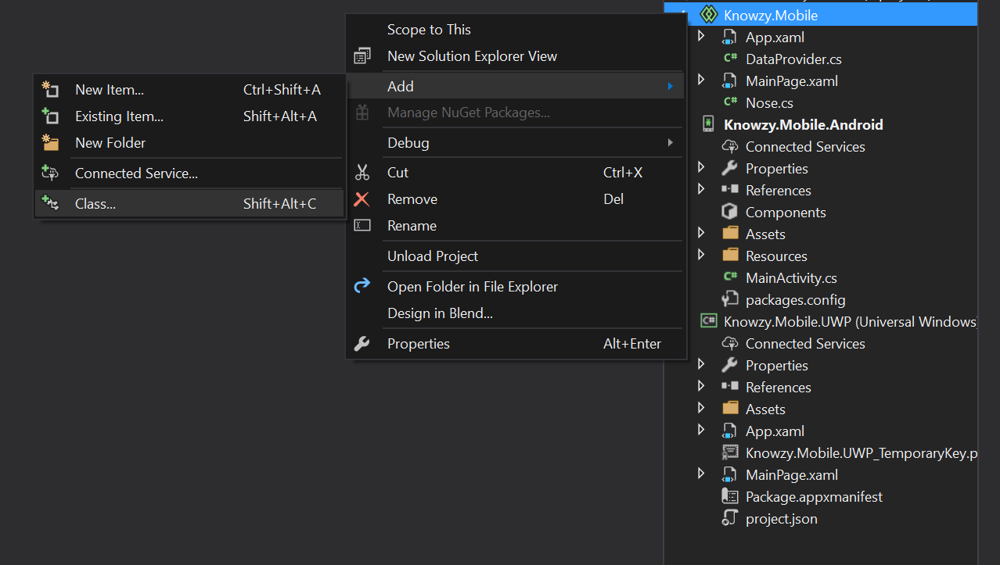
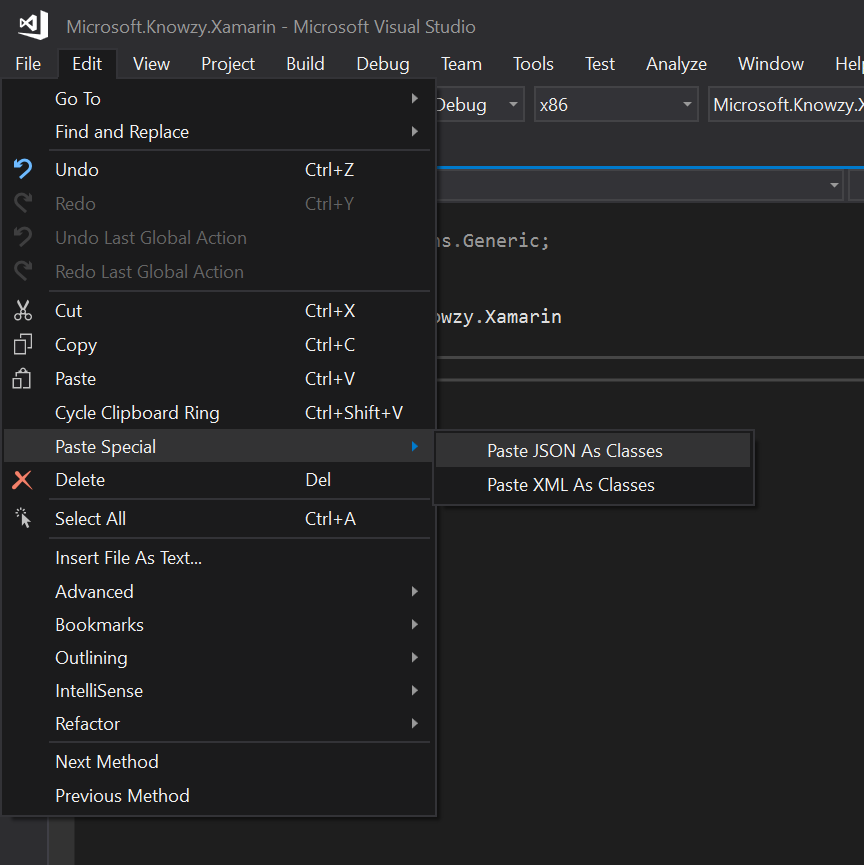
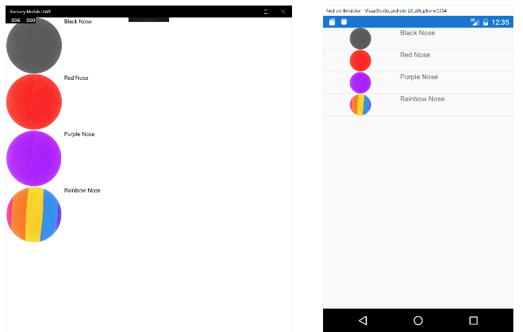

Building a cross platform mobile application will help our marketing department reach an even wider audience of potential customers. Xamarin.Forms allows us to build one application that reaches multiple platforms.
Goals for this task: Create a mobile application with Shared App that runs on Android and UWP.
This is going to be an entirely new product for Knowzy and we'll start from scratch. We've already done some investigation based on the requirements given to us by our management, and we've written a guide for the developer to help them get started.
This walkthrough assumes that you have:
Click here to learn how to install Visual Studio. If you already have Visual Studio 2017 but you're not sure if you have the right workloads installed, open the Visual Studio installer, and then select Modify to view your current workloads. Install any that are missing.
In Visual Studio, select File -> New -> Project from the taskbar.
Under Templates -> Visual C# -> Cross-Platform select Cross Platform App (Xamarin.Forms or Native). Pick a name, and then create the project. > Note: pick a short name and place the project close to the root of your drive (ex: c:\source) in order to avoid long names that might cause issues later when running your project.
We'll start with a Blank App. Make sure Xamarin.Forms is selected under UI Technology and that Shared Project is selected under Code Sharing Strategy.

Note: A Xamarin Mac Agent window might open asking you to connect to a Mac as soon as you create the project. You can safely ignore the message and close this window.
Note: A New Universal Windows Project might open asking you to choose target and minimum platform version. Make sure Target Version is Windows 10 Creators Update. Minimum version can be anything.

That's it. At this point, you should probably spend some time checking out the new solution. You'll notice there are four projects in the solution, one shared project and three platform specific projects. To run the app on a specific platform, use the drop down menu near the top of Visual Studio to select which project you want to run:

We'll focus on UWP and Android for our first release. To run your app as a UWP app, select the UWP project. Then change the architecture (the drop down menu to the left of the Startup projects menu), and select x86 or x64. Then, click the play button (or press F5) to build and run the app:

To test and debug the app on Android, there are several options:
Note: If you try to run the faster x86 version of the Android SDK Emulator and get an exception, you might need to turn of the hypervisor by running the following command in Command Prompt as Administrator:
bcdedit /set hypervisorlaunchtype offand reboot.
Change the Startup Project to the Android project, and use the drop down menu on the right to select the emulator or device that you want to use. Click the play icon to build and run the app.

Now get to know your new app.
Note: Since we'll not be using the iOS project for this release, feel free to remove it from your solution.
For our first task, we want to be able to list all the different Knowzy products. Fortunately, we already have a public feed for our products. It's located here, and we can use it to get all of the data for our app.
Let's create a new class that we can use to represent our nose model. Right-click the Shared project (the one without a platform specifier at the end), and select Add -> Class.

Name the new class Nose. Erase everything between the namespace definition. We need our new class to match the data that we get from our JSON feed, so we'll create a new class from the JSON. Copy this JSON but don't paste it anywhere yet:
{
"Id": "RN3454",
"Name": "Black Nose",
"RawMaterial": "Black foam",
"Notes": "Everything you'd expect, and a little something more.",
"Image": "https://raw.githubusercontent.com/Knowzy/KnowzyInternalApps/master/src/Noses/black.png"
}
In Visual Studio, place the cursor where you want to copy the new class (between the namespace braces). In the taskbar, select Edit -> Paste Special -> Paste JSON as Classes. This generates a new class for you by using the JSON that you just copied. You just need to change the name from RootObject to Nose.

Now that we have our model, let's create a way to retrieve the data from our feed.
Add this static method in the class to pull in the data from the link above:
public static async Task<Nose[]> GetProducts()
{
using (var client = new HttpClient())
{
var json = await client.GetStringAsync("https://raw.githubusercontent.com/Knowzy/KnowzyInternalApps/master/src/Noses/noses.json");
return JsonConvert.DeserializeObject<Nose[]>(json);
}
}
You'll need to add few namespaces for this function to work:
using Newtonsoft.Json;
using System.Net.Http;
using System.Threading.Tasks;
We now have a static method that retrieves the JSON feed and deserializes it into Nose objects, which we can use in our app.
Now that we have the business logic out of the way, let's move on to the UI. Xamarin.Forms uses XAML to define the shared UI, so if you've used XAML before, you'll feel right at home. All the shared code is in the shared project of the solution, and there's already a XAML page created for us: MainPage.xaml. Go ahead and open the page. Currently there's only one element there, a Label. Instead of a Label, we'll use a ListView to display all of the products.
Remove the Label and add a ListView instead. Give it a name. In this case it's ProductListView.
<ListView x:Name="ProductListView">
</ListView>
Open MainPage.xaml.cs. This is where the underlying code for your app view goes. Here we can override the OnAppearing method which allows us to get the list of products, and set them as the source of the ListView. Add the following code to the class:
protected async override void OnAppearing()
{
base.OnAppearing();
ProductListView.ItemsSource = await DataProvider.GetProducts();
}
Finally, we need to define what each product will look like. For that, we'll create a data template to customize each Cell. Here is the final XAML for the ListView:
<ListView x:Name="ProductListView">
<ListView.ItemTemplate>
<DataTemplate>
<ViewCell>
<StackLayout Orientation="Horizontal">
<Image Source="{Binding Image}" HeightRequest="150" WidthRequest="150"></Image>
<Label Text="{Binding Name}"></Label>
</StackLayout>
</ViewCell>
</DataTemplate>
</ListView.ItemTemplate>
</ListView>
Task Complete. Go ahead and try running the app on your machine, and then in the Android emulator.

Go to the next Task where you'll add another page and the capability to capture an image by using APIs specific to each platform.